The tidyverse includes the incredibly powerful ggplot2 package. This package is pretty much the industry standard for making graphs for publication. ggplot2 is built on the grammar of graphics where you build graphs by specifying underlying attributes and layering geometric objects on top of each other. In the diagram below you can see how a graph is built from geometric objects (the things that are plotted such as points and bars) a scale, and plot annotations (e.g. a key, title etc). You can then apply faceting to the graph to automatically split one graph into multiple plots, allowing you to easily compare different groupings. Publications, such as the Financial Times, make daily use of ggplot2.
Adapted from A Layered Grammar of Graphics, Wickham, 2010
2 ggplot
The basic structure of ggplot code is to combine different graphing elements through the use of the + operator. To demonstrate this, let’s look at the distribution of scores in a module, 7SSEM040 - Teacher Development,
library(tidyverse)# display a graph of the results1ggplot(data = student_data,2aes(x =`7SSEM040 - Teacher Development`)) +3geom_histogram(binwidth =2, fill ="darkgreen") +4ggtitle("7SSEM040 - Teacher Development score distribution") +5theme(legend.position ="bottom")
1
line 7-8 set up the ggplot giving it the table object student_data as its data input and setting up the aesthetics for the rest of the graph elements using columns from student_data.
2
The aes(<attribute>, <attribute>, ...) command allows us to specify aesthetic elements of the graph that will change dependent on the dataset we use. In the student_data set, we choose the vector of scores for 7SSEM040 - Teacher Development
3
line 3 using the data and aes values defined on lines 7-8, geom_histogram uses these x values to draw a histogram. There are lots of different parameters we could give geom_histogram, but here we are content with just setting the bin_width - how wide each bar should be, and the colour of the plot
4
Finally we customise the title of the graph, ggtitle, ready for display
5
and place the legend underneath the graph
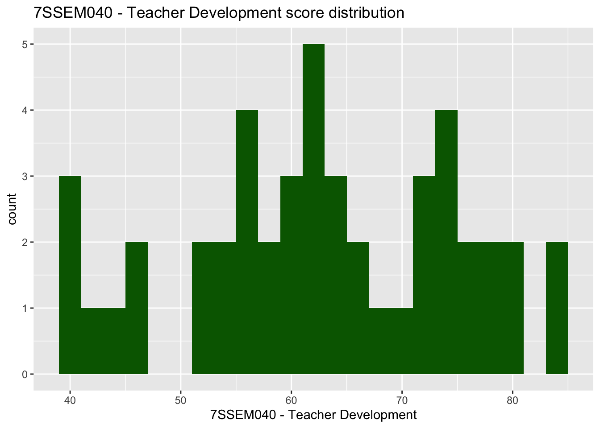
Important
Switching between the pipes and ggplot can get rather confusing. A very common mistake in using ggplot is to try and link together the geom_ elements with a pipe command %>% rather than the +.
3 geoms
There are about 40 different geometric objects in ggplot, allowing you to create almost any sort of graph. We will be exploring a few of them in detail, but if you want to explore others, please follow some of the links below:
geom_hline for adding static horizontal lines to a graph
geom_vline for adding static vertical lines to a graph
3.1 geom_bar
The geom_bar function is versatile, allowing the creation of bar, multiple bar, stacked bar charts and histograms. This first example shows how we can use bar charts to represent the number of cars the gender balance of students in “7SSEM071 - Gender, Power and Inequality”.
plot_data <- student_data %>%#1 select(Gender, Country, `7SSEM071 - Gender, Power and Inequality`) %>%filter(!is.na(`7SSEM071 - Gender, Power and Inequality`))2ggplot(data = plot_data,3aes(x=Gender)) +4geom_bar()
2
pass the plot_cars to ggplot, as the dataset we are going to plot
3
specify the x values to be the values stored in Gender, i.e. we will have a bar for each response given in Gender: Male, Female and Other
4
geom_bar tell ggplot to make bars, it uses the aesthetic from line 5, to plot the x axis, note we haven’t given it a y value, this is auto-calculated from the number of students in each x group.
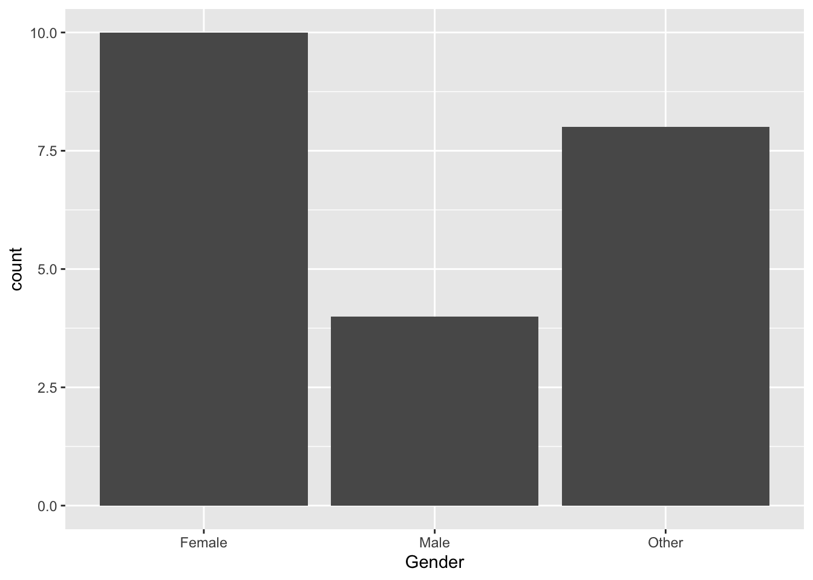
We can choose to let ggplot split the results into different groups for us by setting a fill option, in this case on the Country of the student. To do this, we add fill = Country to the aes on line 2 below:
ggplot(data = plot_data, aes(x = Gender, fill = Country)) +geom_bar()
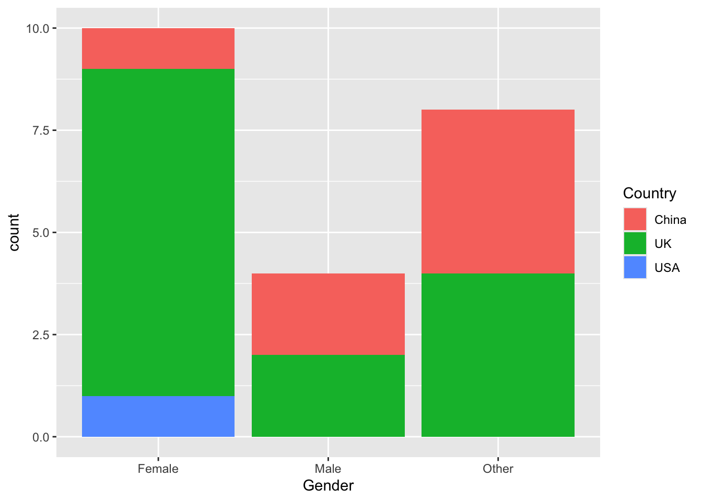
The bars are now coloured with a key, but, annoyingly, the bars are on top of each other which makes it hard to make direct comparisons. To compare different groups we need the bars to not be stacked, we want them next to each other, or in ggplot language, we want the bars to dodge each other, to do this we add the position=position_dodge() command to line 3 below:
ggplot(data = plot_data, aes(x = Gender, fill = Country)) +geom_bar(position=position_dodge())
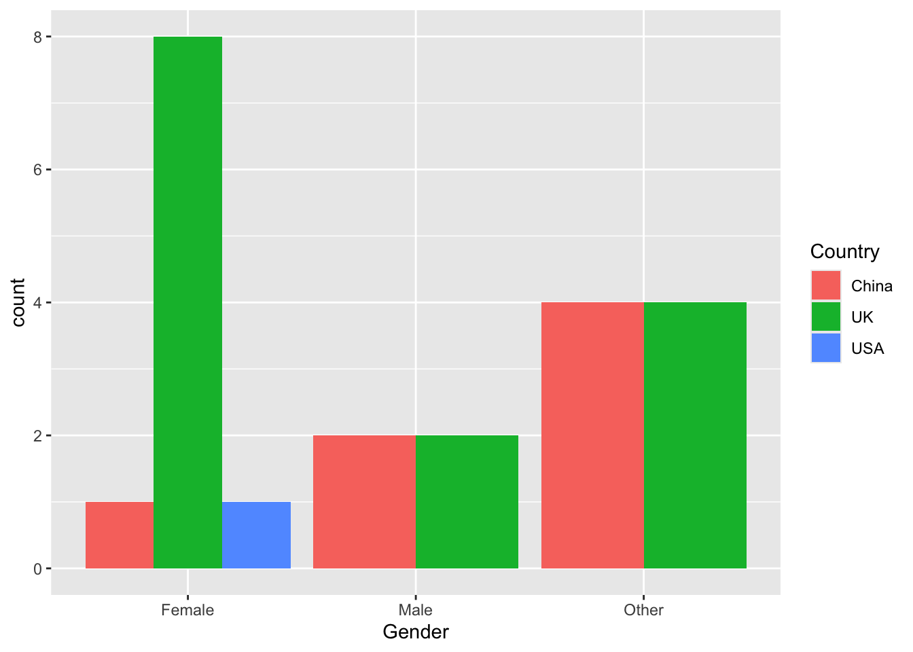
You might prefer the width of columns to remain constant, in which case you can use preserve = "single" inside the geom_bar()
ggplot can do a lot of the hard work when putting together bar charts, e.g. counting the number of students in each group, but there might also be times when you want to use pipes to calculate summary values that you then want plot. That is, you want to specify the heights of the bars yourself. To do this we will specify the y axis in the aes and use stat="indentity" to tell ggplot that’s what we’re doing.
Take the example where you want to find the overall percentage of students for a range of genders and countries getting over 70 in their dissertations:
ggplot(data=schools %>%filter(Phase =="Secondary"), aes(x=Region)) +# 1 no aes() around the x value # 2 missing close bracketsgeom_bar(aes(fill=Gender)) # 3 aes not as # 4 missing closing bracket
Create a bar chart showing the total number of students for each grouping of “course satisfaction”. Adjust this graph to see if there is a difference for this among females and males.
ggplot(plot_data,aes(x =`course satisfaction`, fill = Gender)) +geom_bar(position=position_dodge()) +theme(legend.position ="bottom")
3.2 geom_text
Our bar charts look great, but finding the actual value of each bar can be a little clumsy if we have to get a ruler out and read off the y-axis. Better would be for us to have numbers listed at the top of each bar by adding a geom_text element:
line 6 starts the geom_text command, telling the geom to use the countstatistic from ggplot, this means it will be able to fetch the number of rows in each grouping.
2
as we want the label to change for each bar element, we put label=after_stat(count) inside aes. The x location of the labels is inherited from line 4 and the y location will be calculated from the height of each bar
3
we want the labels to align to the bars, so we tell the geom_text to also position_dodge, passing a width=0.9 to the dodge function, so the labels line up above the columns,
4
finally, on line 9, we vertically adjust the labels vjust, so they sit on top of the columns.
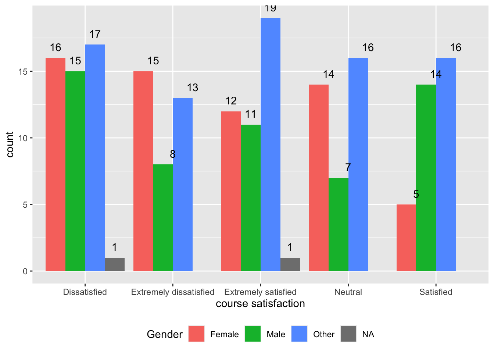
Rather than adding the count, you might want to add the percentage that each bar represents, we can do this by changing the value given to label on line 5, below:
ggplot(data = student_data, aes(x =`course satisfaction`, fill = Gender)) +geom_bar(position=position_dodge()) +geom_text(stat='count', aes(label=100*(after_stat(count)/sum(after_stat(count))) %>%round(3), group = Gender), position =position_dodge(width=0.9),vjust=-0.5)
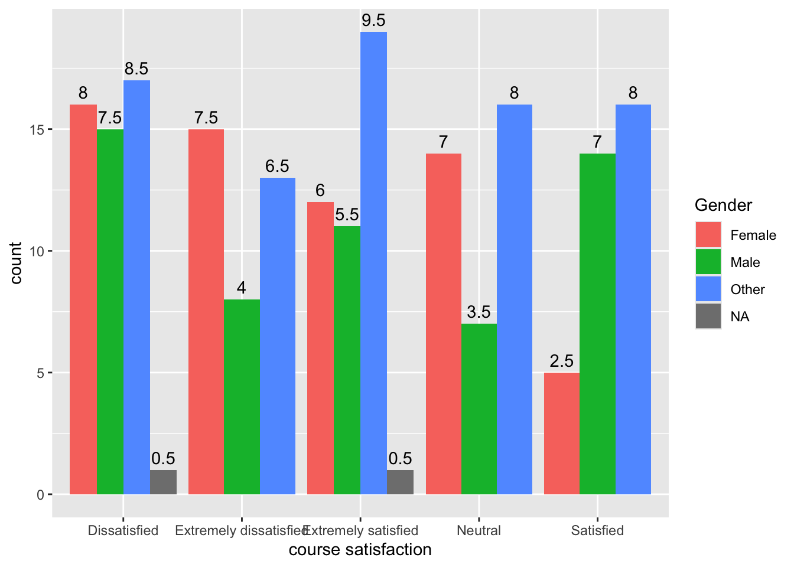
3.3 geom_point
To plot a scatter plot, we use geom_point. For example, to plot dissertation scores against scores on the quantitative module we: a) create a data set of the scores; b) pass the data to ggplot; c) use aes to specify the x and y variables and d) plot with geom_point().
# Create a data.frame of dissewplot_data <- student_data %>%select(`7SSES009 - Quantitative Methods in the Context of Education Research`, `7SSEM066 - Research Methods and Dissertation (60 credits)`) # Plot the data on a scatter graph using geom_pointggplot(plot_data, aes(x =`7SSES009 - Quantitative Methods in the Context of Education Research` , y =`7SSEM066 - Research Methods and Dissertation (60 credits)`)) +geom_point()
Warning: Removed 163 rows containing missing values or values outside the scale range
(`geom_point()`).
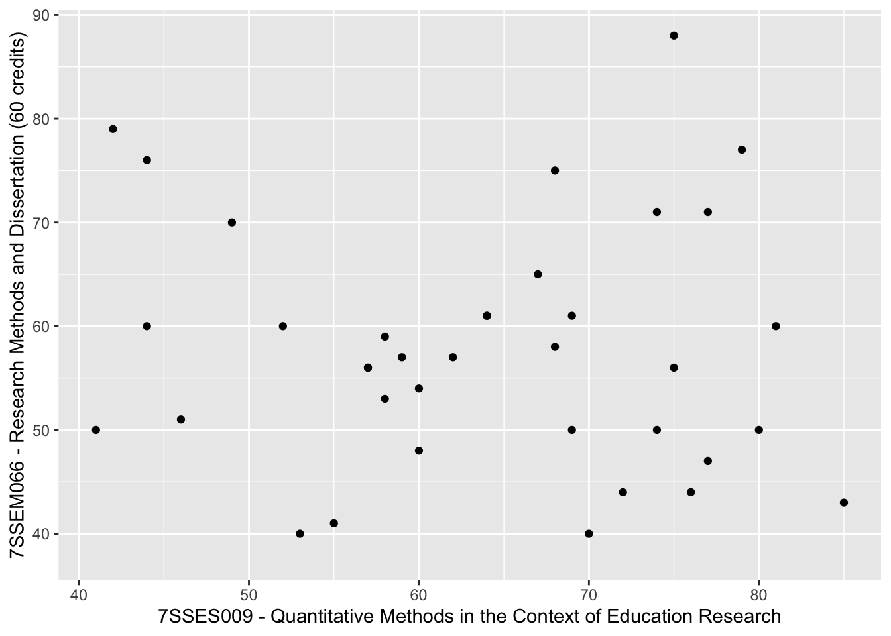
That graph is quite dense, so we can use the alpha function to make the points slightly transparent, size to make them smaller, and set their colour. I will also tidy up the axis names and add a line (note that in: geom_smooth(method = "lm", colour = "black")method = "lm" sets the line to a straight (i.e., linear model, lm) line).
ggplot(plot_data, aes(x =`7SSES009 - Quantitative Methods in the Context of Education Research`4 , y =`7SSEM066 - Research Methods and Dissertation (60 credits)`)) +5geom_point(alpha =0.6, size =0.5, colour ="red") +6xlab("Quant module score") +7ylab("Dissertation score") +8geom_smooth(method ="lm", colour ="black", linewidth =0.1)
4
line 4 - set the data to plot and set which variable goes on the x and y axis
5
line 5 - set the point size (size=0.5), colour (colour = "red") and opacity (alpha = 0.6)
6
line 6 - set the x-axis title
7
line 7 - set the y-axis title
8
line 8 - plot a straight line (method = "lm") and set its colour to black, and the width to 0.5
`geom_smooth()` using formula = 'y ~ x'
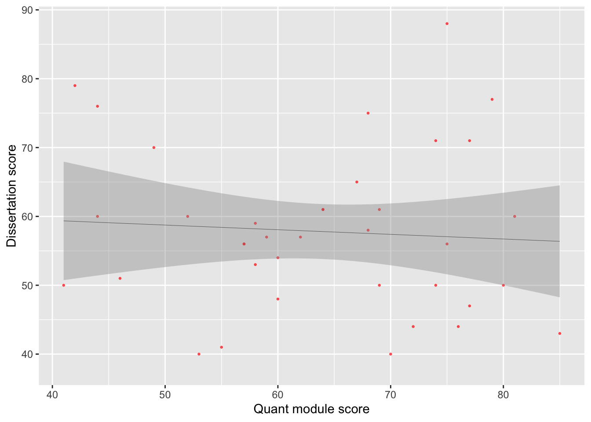
Tip
You can set the colour of points using another variable inside the aesthetics. For example to change the colour of points by gender you can use aes(colour = Gender) which gives the points for male and female students different colours.
plot_data <- student_data %>%select(`7SSES009 - Quantitative Methods in the Context of Education Research`, `7SSEM066 - Research Methods and Dissertation (60 credits)`, Gender) ggplot(plot_data, aes(x =`7SSES009 - Quantitative Methods in the Context of Education Research` , y =`7SSEM066 - Research Methods and Dissertation (60 credits)`,colour = Gender)) +geom_point(alpha =0.7, size =0.7) +xlab("Quant module score") +ylab("Dissertation score") +geom_smooth(method ="lm", colour ="black", linewidth =0.1)
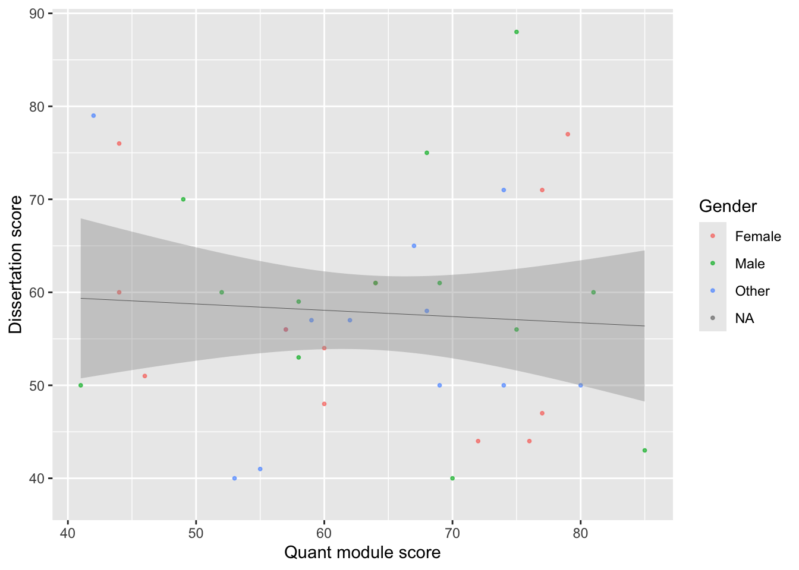
When you specify colours by a variable, ggplot with use the default colour palette (a red and a teal colour for two variables). To set your own choice of colours you can use scale_colour_manual(values = c()) linking the values of the varibale to colours. For example:
# Create a scatter plot of quant module vs dissertation scoresggplot(plot_data, aes(x =`7SSES009 - Quantitative Methods in the Context of Education Research` , y =`7SSEM066 - Research Methods and Dissertation (60 credits)`,colour = Gender)) +scale_colour_manual(values =c("Male"="red", "Female"="blue", "Other"="darkgreen")) +# Manually change male points to red and female to blue and other to greengeom_point(alpha =0.7, size =0.7) +xlab("Quant module score") +ylab("Dissertation score") +geom_smooth(method ="lm", colour ="black", linewidth =0.1)
Note that you need to match the aesthetic you want to change, if you are plotting a bar plot, where the aesthetic impacting the colour is fill (rather than the colour for geom_point above), you need to use scale_fill_manual(values = c("Male" = "red", "Female" = "blue", "Other" ="green"))
plot_data <- student_data %>%select( `7SSEM066 - Research Methods and Dissertation (60 credits)`, Gender, Country) %>%group_by(Gender, Country) %>%summarise(mean_score =mean(`7SSEM066 - Research Methods and Dissertation (60 credits)`))# Create a bar plot ggplot(plot_data, aes(x = Country, y = mean_score, fill = Gender)) +geom_bar(stat ="identity", position =position_dodge2(preserve ="single")) +scale_fill_manual(values =c("Male"="lightgreen", "Female"="orange","Other"="lightblue")) # Manually change fill
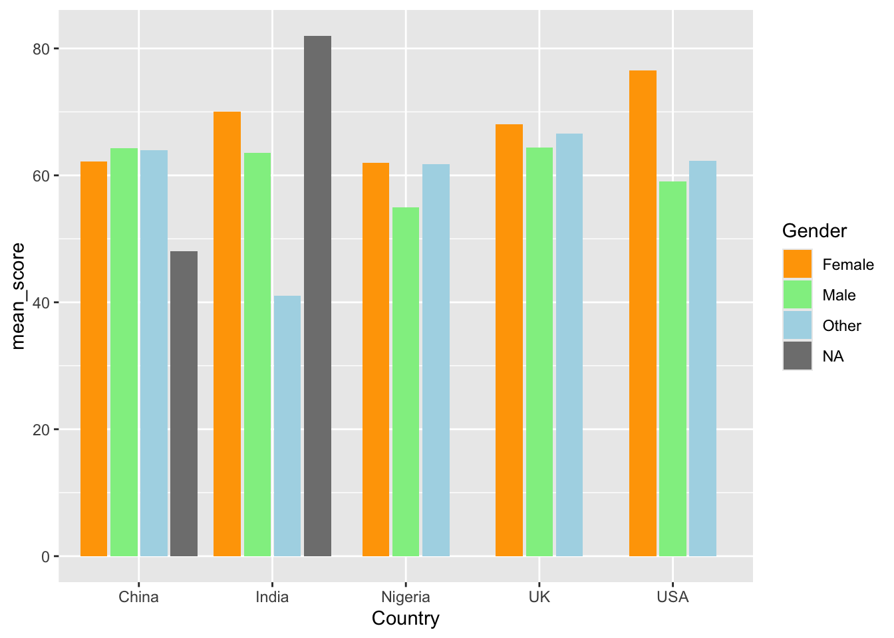
Additionally, when we make graphs we often want to label the data set, for example if we were to plot all the countries and their dissertation scores and quant model scores
plot_data <- student_data %>%select(`7SSES009 - Quantitative Methods in the Context of Education Research`, `7SSEM066 - Research Methods and Dissertation (60 credits)`, Name, Gender) ggplot(plot_data, aes(x =`7SSES009 - Quantitative Methods in the Context of Education Research` , y =`7SSEM066 - Research Methods and Dissertation (60 credits)`,colour = Gender)) +scale_colour_manual(values =c("Male"="red", "Female"="blue", "Other"="darkgreen")) +# Manually change male points to red and female to blue and other to greengeom_point(alpha =0.7, size =0.7) +xlab("Quant module score") +ylab("Dissertation score") +geom_smooth(method ="lm", colour ="black", linewidth =0.1)
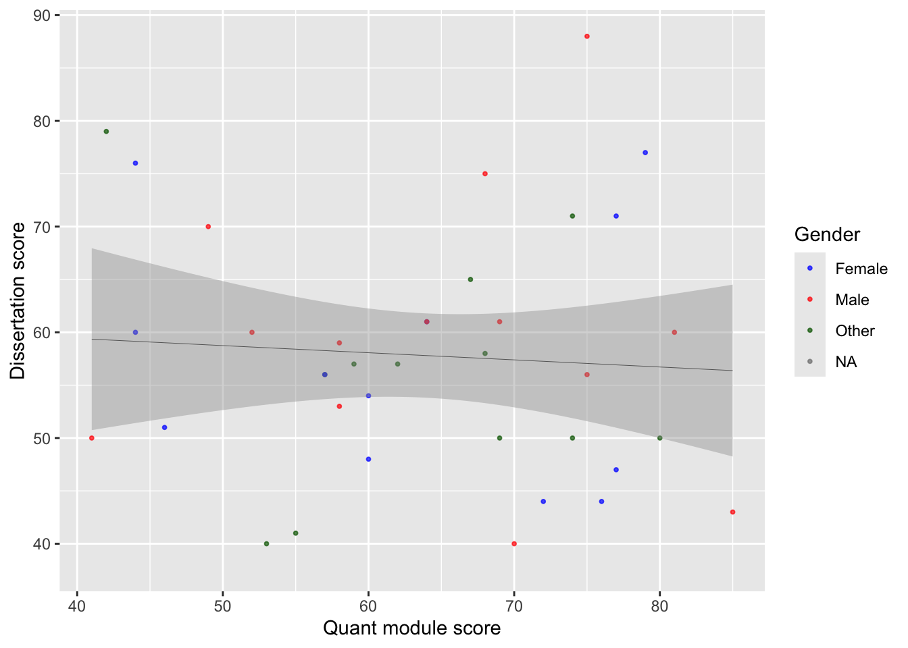
This looks great, but we don’t actually know which countries are which. To get this data we need to add text to the graph, using geom_text.
ggplot(plot_data, aes(x =`7SSES009 - Quantitative Methods in the Context of Education Research` , y =`7SSEM066 - Research Methods and Dissertation (60 credits)`,colour = Gender)) +scale_colour_manual(values =c("Male"="red", "Female"="blue", "Other"="darkgreen")) +geom_point(alpha =0.7, size =0.7) +xlab("Quant module score") +ylab("Dissertation score") +geom_smooth(method ="lm", colour ="black", linewidth =0.1) +geom_text(aes(label = Name), colour="black", check_overlap =TRUE)
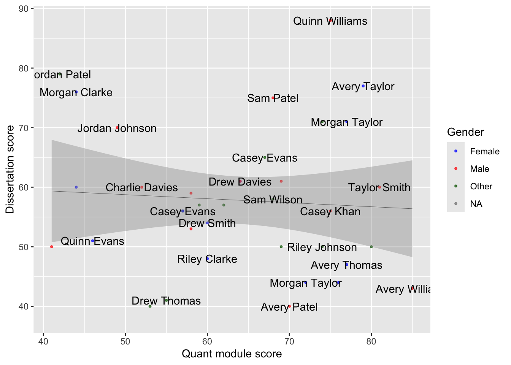
Here we have used colour="black" outside the aes to define the colour for all the labels, and check_overlap = TRUE which removes any labels that are on top of each other. It’s still a little bit hard to understand, and maybe we want to focus on just a few of the labels for countries we are interested in. For example
# make a vector of countries you want to have labels forfocus_students <-c("Quinn Williams", "Drew Thomas", "Taylor Smith")# add a new column to the plot_data where these countries areplot_data <- plot_data %>%mutate(focus = Name %in% focus_students)plot_data
# A tibble: 200 × 5
7SSES009 - Quantitative Methods …¹ 7SSEM066 - Research …² Name Gender focus
<dbl> <dbl> <chr> <chr> <lgl>
1 NA 56 Quin… Female FALSE
2 57 56 Case… Other FALSE
3 NA 56 Jami… Other FALSE
4 NA 56 Case… Male FALSE
5 NA 56 Morg… Female FALSE
6 NA 56 Aver… Other FALSE
7 NA 56 Rile… Other FALSE
8 57 56 Case… Female FALSE
9 75 56 Case… Male FALSE
10 NA 56 Rile… Other FALSE
11 NA 54 Jord… Female FALSE
12 NA 81 Sam … Female FALSE
13 52 60 Char… Male FALSE
14 NA 86 Rile… Female FALSE
15 NA 88 Morg… Other FALSE
16 55 41 Drew… Other TRUE
17 NA 67 Aver… Other FALSE
18 NA 86 Alex… Other FALSE
19 NA 68 Quin… Female FALSE
20 NA 63 Sam … Other FALSE
21 NA 88 Drew… Other FALSE
22 NA 63 Quin… Other FALSE
23 68 75 Sam … Male FALSE
24 NA 69 Morg… Other FALSE
25 72 44 Morg… Female FALSE
26 NA 87 Rile… Male FALSE
27 NA 52 Case… Other FALSE
28 70 40 Aver… Male FALSE
29 NA 56 Drew… Female FALSE
30 NA 88 Char… Female FALSE
31 NA 86 Morg… Female FALSE
32 NA 76 Drew… Other FALSE
33 NA 73 Quin… Other FALSE
34 NA 88 Alex… Other FALSE
35 NA 74 Aver… Male FALSE
36 NA 76 Morg… Female FALSE
37 NA 68 Rile… Female FALSE
38 NA 70 Morg… Other FALSE
39 NA 54 Sam … Other FALSE
40 NA 46 Sam … Other FALSE
41 NA 88 Aver… Male FALSE
42 NA 87 Aver… Male FALSE
43 NA 76 Rile… Female FALSE
44 NA 81 Tayl… Male FALSE
45 53 40 Jami… Other FALSE
46 NA 64 Jami… Female FALSE
47 NA 79 Drew… Other FALSE
48 74 50 Rile… Other FALSE
49 NA 55 Jami… Male FALSE
50 NA 51 Jami… Other FALSE
51 NA 46 Char… Male FALSE
52 NA 61 Char… Male FALSE
53 64 61 Drew… Female FALSE
54 68 58 Sam … Other FALSE
55 NA 46 Morg… Female FALSE
56 NA 46 Quin… Male FALSE
57 46 51 Quin… Female FALSE
58 NA 63 Tayl… Female FALSE
59 NA 53 Tayl… Female FALSE
60 NA 85 Quin… Other FALSE
61 NA 41 Rile… Male FALSE
62 NA 62 Tayl… Other FALSE
63 NA 81 Rile… Male FALSE
64 NA 45 Drew… Other FALSE
65 NA 69 Char… Other FALSE
66 NA 49 Quin… Male FALSE
67 NA 45 Alex… Male FALSE
68 42 79 Jord… Other FALSE
69 NA 87 Morg… Male FALSE
70 NA 58 Case… Other FALSE
71 NA 74 Quin… Female FALSE
72 NA 43 Jord… Female FALSE
73 NA 59 Aver… Female FALSE
74 NA 53 Char… Male FALSE
75 NA 82 Quin… Female FALSE
76 NA 62 Alex… Female FALSE
77 NA 82 Drew… Other FALSE
78 NA 82 Char… <NA> FALSE
79 NA 81 Case… Female FALSE
80 NA 62 Jami… Male FALSE
81 NA 79 Jord… Other FALSE
82 NA 72 Quin… Female FALSE
83 79 77 Aver… Female FALSE
84 NA 38 Tayl… Other FALSE
85 NA 64 Sam … Other FALSE
86 NA 50 Jord… Other FALSE
87 NA 59 Sam … Other FALSE
88 77 71 Morg… Female FALSE
89 62 57 Char… Other FALSE
90 NA 44 Drew… Other FALSE
91 NA 51 Aver… Female FALSE
92 NA 74 Alex… Male FALSE
93 69 61 Jami… Male FALSE
94 NA 81 Alex… Other FALSE
95 NA 44 Morg… Other FALSE
96 NA 62 Jord… Male FALSE
97 NA 88 Sam … Female FALSE
98 NA 86 Aver… Other FALSE
99 NA 86 Alex… Other FALSE
100 60 48 Rile… Female FALSE
101 NA 45 Quin… Other FALSE
102 NA 73 Sam … Male FALSE
103 NA 57 Sam … Other FALSE
104 NA 74 Char… Male FALSE
105 NA 56 Drew… Female TRUE
106 NA 48 Alex… Other FALSE
107 NA 80 Drew… Other FALSE
108 NA 43 Drew… Male FALSE
109 NA 63 Quin… Other FALSE
110 NA 66 Case… Female FALSE
111 NA 71 Char… Female FALSE
112 NA 56 Case… Other FALSE
113 NA 65 Morg… Female FALSE
114 NA 88 Morg… Male FALSE
115 NA 64 Jord… Male FALSE
116 NA 86 Sam … Other FALSE
117 NA 88 Jord… Female FALSE
118 74 71 Jami… Other FALSE
119 81 60 Tayl… Male TRUE
120 NA 46 Jord… Male FALSE
121 NA 88 Rile… Male FALSE
122 60 54 Drew… Female FALSE
123 NA 41 Tayl… Female FALSE
124 NA 88 Drew… Female FALSE
125 NA 77 Tayl… Female FALSE
126 NA 46 Tayl… Female FALSE
127 NA 68 Jami… Female FALSE
128 NA 88 Morg… Male FALSE
129 NA 70 Case… Female FALSE
130 44 60 Aver… Female FALSE
131 NA 73 Tayl… Other FALSE
132 NA 55 Char… Male FALSE
133 NA 55 Drew… Other FALSE
134 80 50 Quin… Other FALSE
135 NA 58 Jami… Other FALSE
136 NA 88 Jord… Female FALSE
137 77 47 Aver… Female FALSE
138 85 43 Aver… Male FALSE
139 NA 46 Tayl… Male FALSE
140 NA 75 Jami… Male FALSE
141 NA 72 Morg… Other FALSE
142 NA 86 Char… Male FALSE
143 NA 75 Jord… Female FALSE
144 NA 78 Sam … Other FALSE
145 NA 66 Morg… Male FALSE
146 NA 74 Drew… Other FALSE
147 NA 83 Case… Male FALSE
148 NA 81 Jord… Female FALSE
149 NA 88 Sam … Male FALSE
150 NA 62 Rile… Other FALSE
151 NA 55 Case… Male FALSE
152 NA 60 Quin… Other FALSE
153 NA 39 Char… Male FALSE
154 NA 48 Morg… <NA> FALSE
155 NA 84 Sam … Other FALSE
156 NA 51 Quin… Female FALSE
157 NA 51 Jami… Male FALSE
158 NA 42 Char… Female FALSE
159 NA 51 Sam … Male FALSE
160 NA 78 Sam … Female FALSE
161 NA 84 Drew… Female FALSE
162 67 65 Case… Other FALSE
163 NA 59 Jord… Female FALSE
164 NA 52 Sam … Other FALSE
165 76 44 Drew… Female FALSE
166 58 59 Aver… Male FALSE
167 NA 69 Aver… Other FALSE
168 NA 50 Char… Male FALSE
169 NA 62 Rile… Male FALSE
170 41 50 Alex… Male FALSE
171 NA 65 Case… Male FALSE
172 59 57 Morg… Other FALSE
173 NA 73 Drew… Other FALSE
174 NA 58 Quin… Female FALSE
175 NA 57 Jami… Other FALSE
176 NA 67 Sam … Other FALSE
177 NA 78 Alex… Other FALSE
178 69 50 Morg… Other FALSE
179 64 61 Char… Male FALSE
180 NA 53 Jami… Other FALSE
181 NA 72 Rile… Other FALSE
182 NA 48 Aver… Other FALSE
183 NA 85 Jord… Other FALSE
184 NA 79 Jami… Female FALSE
185 NA 74 Morg… Other FALSE
186 NA 72 Char… Male FALSE
187 NA 58 Aver… Female FALSE
188 NA 67 Tayl… Female FALSE
189 NA 85 Sam … Other FALSE
190 NA 70 Jord… Other FALSE
191 NA 84 Jord… Other FALSE
192 NA 55 Quin… Other FALSE
193 44 76 Morg… Female FALSE
194 58 53 Rile… Male FALSE
195 49 70 Jord… Male FALSE
196 NA 64 Aver… Other FALSE
197 NA 53 Alex… Female FALSE
198 NA 69 Aver… Other FALSE
199 75 88 Quin… Male TRUE
200 NA 87 Rile… Female FALSE
# ℹ abbreviated names:
# ¹`7SSES009 - Quantitative Methods in the Context of Education Research`,
# ²`7SSEM066 - Research Methods and Dissertation (60 credits)`
Now we can adjust out geom_text to only show those countries that we want to focus on:
ggplot(plot_data, aes(x =`7SSES009 - Quantitative Methods in the Context of Education Research` , y =`7SSEM066 - Research Methods and Dissertation (60 credits)`,colour = Gender)) +scale_colour_manual(values =c("Male"="red", "Female"="blue", "Other"="darkgreen")) +geom_point(alpha =0.7, size =0.7) +xlab("Quant module score") +ylab("Dissertation score") +geom_smooth(method ="lm", colour ="black", linewidth =0.1) +1geom_text(data=plot_data %>%filter(focus ==TRUE),2aes(label = Name),colour="black", check_overlap =TRUE)
1
changes the data that is being passed to the geom_text, it no longer uses the data defined in the ggplot command, but has a new dataset, that is filtered on focus == TRUE, i.e. only containing the names that we want.
2
Note that the x and y mappings from line 2 are inherited by line 6, it’s only the data that we have redefined
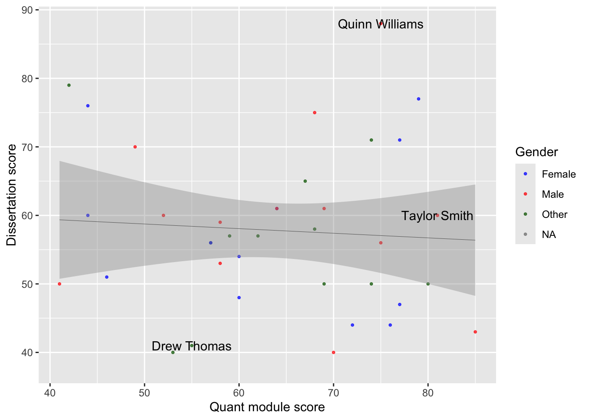
Tip
geom_text is great, but you might find that ggrepel package useful as it’ll add lines connecting the text the data points. Using the plot_data from above:
library(ggrepel)ggplot(plot_data, aes(x =`7SSES009 - Quantitative Methods in the Context of Education Research` , y =`7SSEM066 - Research Methods and Dissertation (60 credits)`,colour = Gender)) +scale_colour_manual(values =c("Male"="red", "Female"="blue", "Other"="darkgreen")) +geom_point(alpha =0.7, size =0.7) +xlab("Quant module score") +ylab("Dissertation score") +geom_smooth(method ="lm", colour ="black", linewidth =0.1) +geom_text_repel(data=plot_data, aes(label = Name), colour="black", box.padding =0.5,max.overlaps =Inf,check_overlap =TRUE)